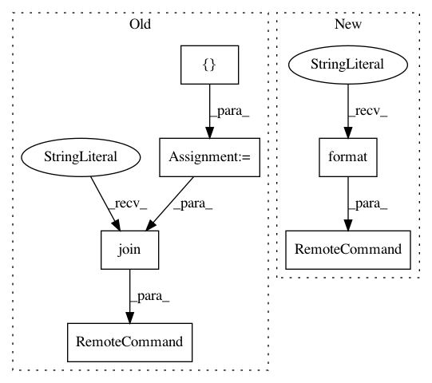

4c695cbb83954a50a5f87231f26464a0292508a9,perfkitbenchmarker/linux_packages/redis_enterprise.py,,LoadCluster,#Any#Any#,215
Before Change
def LoadCluster(vm, redis_port):
Load the cluster before performing tests.
load_command = [
"/opt/redislabs/bin/memtier_benchmark",
"-s localhost",
"-p", str(redis_port),
"-t 1", // Set -t and -c to 1 to avoid duplicated work in writing the same
"-c 1", // key/value pairs repeatedly.
"--ratio 1:0",
"--pipeline 100",
"-d 100",
"--key-pattern S:S",
"--key-minimum 1",
"--key-maximum", str(FLAGS.enterprise_redis_load_records),
"-n allkeys",
"--cluster-mode",
]
vm.RemoteCommand(" ".join(load_command))
def BuildRunCommand(redis_vm, threads, port):
Spawn a memtir_benchmark on the load_vm against the redis_vm:port.
After Change
def LoadCluster(vm, redis_port):
Load the cluster before performing tests.
vm.RemoteCommand(
"/opt/redislabs/bin/memtier_benchmark "
"-s localhost "
"-p {port} "
"-t 1 " // Set -t and -c to 1 to avoid duplicated work in writing the same
"-c 1 " // key/value pairs repeatedly.
"--ratio 1:0 "
"--pipeline 100 "
"-d 100 "
"--key-pattern S:S "
"--key-minimum 1 "
"--key-maximum {load_records} "
"-n allkeys "
"--cluster-mode ".format(
port=str(redis_port),
load_records=str(FLAGS.enterprise_redis_load_records)))
def BuildRunCommand(redis_vm, threads, port):
Spawn a memtir_benchmark on the load_vm against the redis_vm:port.
In pattern: SUPERPATTERN
Frequency: 3
Non-data size: 6
Instances
Project Name: GoogleCloudPlatform/PerfKitBenchmarker
Commit Name: 4c695cbb83954a50a5f87231f26464a0292508a9
Time: 2019-06-26
Author: ruwa@google.com
File Name: perfkitbenchmarker/linux_packages/redis_enterprise.py
Class Name:
Method Name: LoadCluster
Project Name: GoogleCloudPlatform/PerfKitBenchmarker
Commit Name: 4c695cbb83954a50a5f87231f26464a0292508a9
Time: 2019-06-26
Author: ruwa@google.com
File Name: perfkitbenchmarker/linux_packages/redis_enterprise.py
Class Name:
Method Name: CreateCluster
Project Name: GoogleCloudPlatform/PerfKitBenchmarker
Commit Name: 4c695cbb83954a50a5f87231f26464a0292508a9
Time: 2019-06-26
Author: ruwa@google.com
File Name: perfkitbenchmarker/linux_packages/redis_enterprise.py
Class Name:
Method Name: TuneProxy